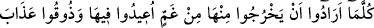
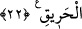

konulsa, onu (kaldırmak için) insanlar ve cinler de bir araya gelseler, onu yerinden
kaldıramazlardı.”[17] buyrulmuştur.
22. Izdıraptan dolayı oradan her çıkmak istediklerinde, oraya geri döndürülürler
ve: “Tadın bu yakıcı azabı!” (denilir).
Cehennemin ızdıraplarından kendilerine isâbet eden şiddetli “ızdıraptan dolayı
oradan her çıkmak istediklerinde,” ateşten her çıkacak olduklarında ve çıkmaya
yaklaştıklarında cehennemden çıkamadan “oraya” onun en üst tarafından en aşağısına
“geri döndürülürler” Rivâyete göre cehennem alevleri ile onlara vurup onları yükseltir.
Cehennemin en yukarısına vardıklarında onlara demir kamçılarla vurulur. Yetmiş yıl
cehennemin içine doğru batıp yuvarlanırlar. Kâşifî der ki: “Cehennemin kapısından o
gürzlerle
geri
döndürülürler.
Yani,
cehennemin
kenarına
ulaşıp
çıkmaya
yaklaştıklarında, zebânîler gürzü başlarına vurur ve derekelere (azap çektikleri aşağı
tabakalara) geri döndürürler.”
“Ve” onlara: “Tadın bu yakıcı azabı!” yakıcı ateşin azâbını, denilir.
et-Te’vîlâtü’n-Necmiyye’de der ki: “İmdi,” Allah’tan ve O’nun dîninden uzaklaşmak,
hevâya ve dünyevî şehvetlere tâbi olmak sûretiyle nefis ehlinden; Allah’tan yüz
çevirmek ve peygamberlerin dâvetini reddetmek sûretiyle ruh ehlinden “inkâr edenler
için” kazâ ve kader terzisinin eliyle onların boyuna göre “ateşten elbiseler biçilmiştir.”
Bu elbiselerin kumaşı, şerîata muhâlif davranışlar ile tab’a uygun davranışlardan
dokunmuştur. “Onların başlarının üstünden kaynar su” nefsanî şehvetlerin kaynar suyu
“dökülecektir!” Onunla kalblerinde olan ruhânî güzel ahlâk eritilir ve çıkarılır. “Bir de
onlar için demir kamçılar” yâni kötü ahlâk, kendilerini kaplayan hırs ve emel “vardır!”
Onlara: “Şehvetlerin ateşinin sizden yakıp götürdüğü güzel istîdâdların azâbını tadın
bakalım.” denir.”
Eğer: “Cehennem ateşi hayır mıdır, yoksa şer midir?” denilirse, şöyle cevap veririz:
“O ne hayırdır, ne de şerdir. Belki o azab ve hikmettir. Denilmiştir ki: “Bir cihetten
hayırdır. Nemrud’un ateşi gibi ki onların gözünde şerdir, İbrahim (a.s.)’a ise serin ve
selâmettir. Yine Hâkim’in elindeki kırbaç gibi ki azgın kimse için hayırdır, itâat eden
kimse için şerdir. Cehennem ateşi Mâlik ve askerleri için hayır ve rahmet, oraya giren
kâfirler için ise şerdir. Yine mü’minlerin isyankârları için hayırdır. Çünkü onların
nefislerinin cevherlerini mâsıyet pisliklerinden arındırır. Başkaları için ise şerdir. Tıpkı
veba gibi ki mü’minler için rahmet, kâfirler için ise azab ve cezâdır.
Varlık (vücûd), âriflere göre sırf hayırdır. Yokluk (adem) ise muhakkıklar nazarında
sırf şerdir. Çünkü varlık, Hakîm olan Allah’ın san’atının eseridir. Nitekim âyette